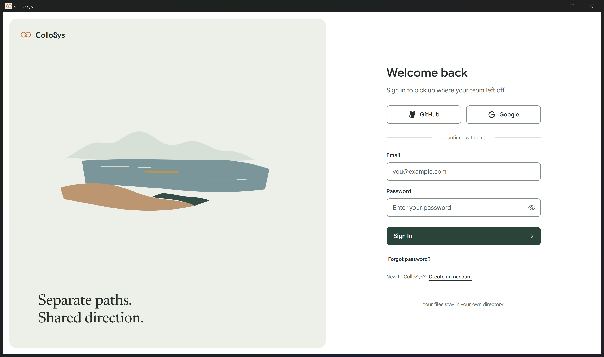

正式 Windows 应用 · 统一视觉 v1 · 本地实测统一视觉语言与精密参数 v1
这轮沿用完整应用、真实持久化 TEST 数据和原有业务交互。Forest 色系、Google Sans / Noto Sans SC、共享控件、阅读布局与原创新水岸插画已进入正式产品。视觉判断与功能检查分别呈现。
构建：f4a1e815（dirty）
内容指纹：7d773de1755a4c27abd5cfc4655aef57391de908507d365a39958494c7a0ea42
前后对照
点击图片查看原尺寸。登录、菜单、65 条会话和 32 文件 Diff 使用同一测试内容；项目索引数量随真实创建测试增加，项目页并非逐像素相同数据快照。截图不表示审美已获批准。
 实施前 · 1440 × 900 CSS px
实施前 · 1440 × 900 CSS px 实施后 · 1440 × 900 CSS px
实施后 · 1440 × 900 CSS px核心页面与窗口组合
真实生效的参数
52 个采样状态；正文对比度低于 4.5:1：0 项，低于 12 px 可见文字：0 项，整页横向溢出：0 项。另有长标题自身裁切断言。颜色按实际祖先背景与 opacity 合成；这不代表穷尽所有产品状态。字体记录来自 Chrome 实际 glyph 使用结果，不只是 font-family 声明。
| 角色 | 字号 / 行高 · 字重 | 实际宽 × 高 | 字体轴 | padding / radius |
|---|
| wordmark | 18px / 24px · 600 | 108.0 × 30.0 | "GRAD" 0, "opsz" 18 | 0px / r0px |
| art | 36px / 42px · 450 | 624.5 × 84.0 | normal | 0px / r0px |
| authTitle | 28px / 36px · 600 | 368.0 × 36.0 | "GRAD" 0, "opsz" 18 | 0px / r0px |
| authInput | 15px / 22px · 400 | 368.0 × 44.0 | "GRAD" 0, "opsz" 17 | 10px 14px / r8px |
| authButton | 14px / 20px · 500 | 368.0 × 44.0 | "GRAD" 0, "opsz" 17 | 0px / r8px |
| pageTitle | 24px / 32px · 600 | 270.5 × 32.0 | "GRAD" 0, "opsz" 18 | 0px / r0px |
| objectTitle | 20px / 28px · 600 | 876.5 × 28.0 | "GRAD" 0, "opsz" 18 | 0px / r0px |
| taskTitle | 20px / 28px · 600 | 690.0 × 84.0 | "GRAD" 0, "opsz" 18 | 0px / r0px |
| nav | 14px / 20px · 500 | 191.8 × 36.0 | "GRAD" 0, "opsz" 17 | 5px 12px / r8px |
| listTitle | 14px / 20px · 500 | 255.1 × 20.0 | "GRAD" 0, "opsz" 17 | 0px / r0px |
| triggerFace | 13px / 18px · 500 | 133.7 × 32.0 | "GRAD" 0, "opsz" 17 | 0px 10px / r8px |
| menu | 13px / 18px · 500 | 214.0 × 34.0 | "GRAD" 0, "opsz" 17 | 8px 10px / r8px |
| display | 13px / 18px · 400 | 320.0 × 275.0 | "GRAD" 0, "opsz" 17 | 16px / r12px |
| body | 15px / 24px · 400 | 720.0 × 202.3 | "GRAD" 0, "opsz" 17 | 0px / r0px |
| field | 14px / 20px · 500 | 290.0 × 36.0 | "GRAD" 0, "opsz" 17 | 0px 12px / r8px |
| settings | 15px / 24px · 400 | 720.0 × 760.0 | "GRAD" 0, "opsz" 17 | 0px / r16px |
规格断言与实际测量 · 字体文件轴、字符覆盖和来源 · Diff 实际字体与窄窗口文件连续性 · 阅读组件草稿与滚动位置
动态过程
下面是真实界面的连续操作录像；文字字段只使用隔离 TEST 数据。菜单锚点、分层 Escape、焦点归还、退出与快速重开均保留原交互。登录动画只接收状态枚举。
菜单按下 → 选择 → 退出
登录水岸、输入、提交与错误
2.1 秒逐帧倒影轨迹 · 实际 Electron 100 / 125 / 150 / 200% 缩放 · 原生窗口、主题与重新打开
三轮性能：保留指标区别
单位 ms。菜单冷首次各 3 次、热操作各 30 次。反馈与可操作、内容稳定、动画结束分别列出。采样使用浏览器帧机会，不代表硬件显示延迟或原生 60 fps。
| 菜单 | 冷首次反馈 × 3 | 热反馈 P50 / P95 | 热可操作 P95 | 热内容稳定 P95 | 热动画结束 P95 |
|---|
| before · Active | 28.2 / 28.2 / 27.6 | 20.0 / 21.2 | 21.2 | 203.9 | 203.9 |
| before · Display | 29.1 / 22.9 / 28.3 | 20.3 / 21.5 | 21.5 | 204.0 | 204.0 |
| before · Grouping | | 9.2 / 13.6 | 13.6 | 28.9 | 28.9 |
| after · Active | 26.5 / 34.1 / 29.2 | 20.6 / 21.4 | 21.4 | 204.2 | 204.2 |
| after · Display | 22.0 / 20.4 / 29.4 | 20.6 / 21.6 | 21.6 | 204.7 | 204.7 |
| after · Grouping | | 9.3 / 14.8 | 14.9 | 28.7 | 28.8 |
重路径为浏览器 EventTiming，每个 interactionId 取最大值，阈值 16 ms；未上报的更快事件不算作 0。慢请求、业务准备、动画时长与输入反馈不能混为一个数字。
| 阶段 / 轮次 | 重路径事件 P95 | 首次 32 文件 Diff P95 | 逐键输入 P95 | 长任务总时长 |
|---|
| before · 1 | 96 | 64 | 24 | 1296.0 |
| before · 2 | 104 | 64 | 16 | 1454.0 |
| before · 3 | 96 | 72 | 24 | 1593.0 |
| after · 1 | 96 | 56 | 16 | 1331.0 |
| after · 2 | 104 | 56 | 16 | 1433.0 |
| after · 3 | 104 | 56 | 16 | 1302.0 |
Active / Display 热反馈约 21 ms，首次 32 文件 Diff 从 64 / 64 / 72 ms 降至 56 / 56 / 56 ms。重流程里的 Project details 冷首次仍为 120 / 120 / 128 ms，长会话返回 P95 为 120 / 120 / 104 ms，尚未稳定满足约 100 ms 目标。它们与 Active / Display 不是同一入口，不能合并宣称全面提速。
稳定内容约 204 ms 包含 160 ms 展开动画及三个匹配帧，不是按下无反馈 204 ms。第三轮轨迹保留长脚本回调，整体布局和绘制耗时未增加，但尚不能确定每次延迟的确切原因。轨迹分析与限制。
原生桌面
本轮最终构建通过独立 Windows 窗口、编辑快捷键、缩放、主题切换与重新打开检查。正常默认入口也已打开并核对当前资源；没有把用户默认账户内容录入公开证据。

隔离 TEST 账户 · 真实原生窗口 · Windows display scale 2验收边界
正常入口仍是仓库内运行 npm start 打开的独立 ColloSys 桌面窗口。没有把 /workbench-preview 当产品，没有替换认证、权限、数据存储或恢复保护，没有使用本地 skills。
真实 GitHub / Google OAuth 仍未配置，外部提供方往返登录未验证。OS 显示缩放记录实际值，未修改系统 DPI；没有多显示器或原生帧率认证。阅读并排组件的节点/草稿测试使用实际组件和有状态测试子内容，正式持久化会话及 Diff 的验收另列，不把两者混称为完整远端会话链。审美是否达到要求由你判断。